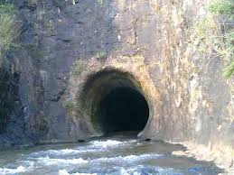
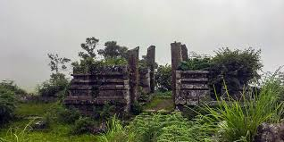

Wayanad district stands on the southern tip of the Deccan plateau and includes part of the Western Ghats. Quite a large area of the district is covered by forest but the continued and indiscriminate exploitation of the natural resources point towards an imminent[31] environmental crisis. There are a lot of trekking points in this district. Chembra Peak (2,100m) is the highest peak in the Wayanad district. Banasura Hill (2,079m) is also similar to height of Chembra hill. The district is blessed with rich water resources. There are east flowing and west flowing rivers in the region. One of the major rivers in the district is Kabini River, a tributary of River Kaveri; it is also one of the only three east flowing rivers in Kerala. Kabani has many tributaries including Thirunelli River, Panamaram River and Mananthavady River. All these rivulets help form a rich water resource as well as a distinct landscape for the district. Various streams flow into the Panamaram rivulet while it passes through the mountain gorges and finally the river falls down into Panamaram Valley. After flowing through the district for a certain distance, River Panamaram joins Mananthavady River, which originates from the lower regions of the peak called 'Thondarmudi'.[32]